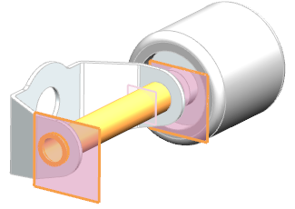
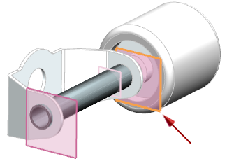
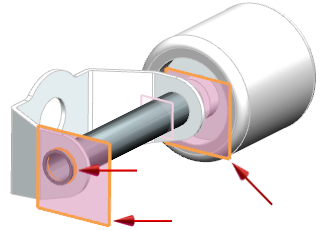

选择装配→WAVE→部件间链接浏览器。
将在对话框的部件组中列出装配中的组件。
在部件间链接浏览器对话框的部件族中，从过滤器列表中选择 wav3_slot_car_axle_rear_tube。

在选定部件中的部件间链接组中，选择链接的基准平面 (4) “Rear Axle Tube”。
注意到将在图形窗口中选中基准平面。

在对话框中，点击选择所有链接 。
注意到所有链接的基准平面与边都在图形窗口中选中。
使用滚动条查看链接状态列。
请特别注意这一列，如果链接的几何体发生变化，这一列将会提示您链接的部件已过时，您就需要更新部件。
关闭部件间链接浏览器。